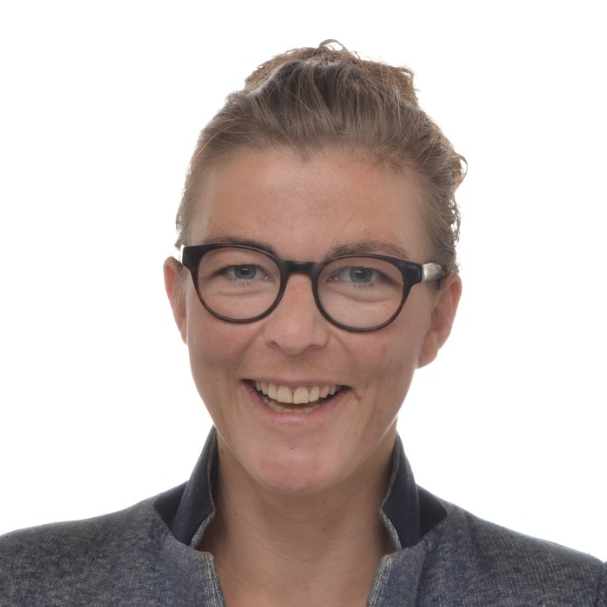

+32 499 25 55 22 leleuxmaud@gmail.com
Rue Lileau, 48 4570 Marchin
main

Leleux Maud
Developer .Net
"I would like become a specialist of front-end,
the reference of the office"
Skills
- - Développer des applications Odoo (Python, javascript) ou des applications .Net après analyse des besoins et contraintes spécifiques au cahier des charges fourni par le client
- - Création de mockup afin de valider avec le client les premières intentions
de développement.
- - Statistiques, analyses qualitative et quantitative
- - Réaliser un power BI, un UML ou diagramme de base de données
Hight Schools
- - HECh : Bachelor to teach in French and Philosophy
- - UCL : Master 1 in psychology
Formations
- - TECHNIFUTUR Developer .Net : 2019 - 2020
C# , HTML5, CSS3, Javascript, Jquery, SQL, MVC5, Entity Framework 6, Web API, ASP.NETCore, Power BI
- - GOOGLE Marketing digital (certifié) : 2019
Google Analytics débutant (certifié) : 2019
Languages
- Français : Langue maternelle
- Anglais : B1
- Néerlandais : A1
Experiences
- INTERN IN DÉVELOPMENT ODOO
Baboum augustus-july : 2020
- - Développement de CRM Odoo après analyse des besoins du client.
- - Développement de pipelines pour ameliorer des applications de VFX .
- PROFESSOR
Province de Liège : 2008-2009
- - Enseignement secondaire inférieur et supérieur en français et morale
- MANAGER for an association
ASBL Bulle de Troubadour : 2018 - 2020
- - Gestion quotidienne de l'ASBL (recrutement, comptabilité, communication)
Hobbies
- Hackathon : Dont celui de mars 2020 Citizen of Wallonia. Podium au classement général et première place de la categorie Wall-e-Cities.
- Théâtre : J'y suis comme un poisson dans l'eau que ce soit en coulisse, sur scène ou en tant que spectatrice
.
References
- Hadien Huvelle,maître de stage, entreprise Baboum, 0497/50 45 85
- Debras Laurent, directeur-adjoint du service informatique du CHU Liège, 0474/74.61.55